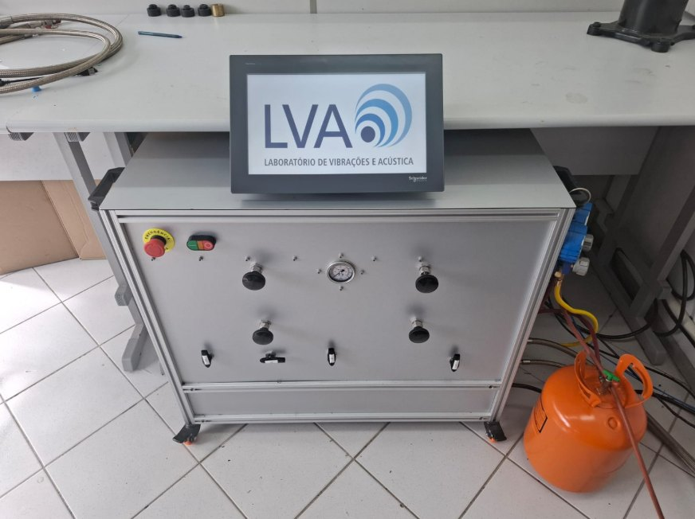
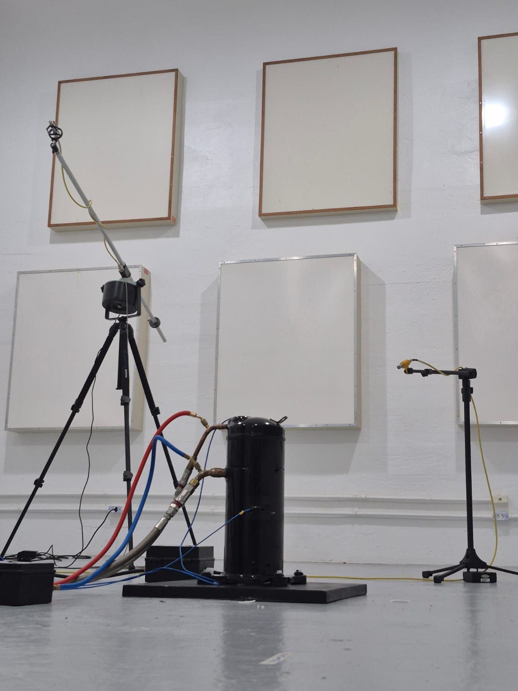

January 2025 – August 2026
R&D research fellow
- Programmed the PLC (Ladder) and the HMI of a compact, semi-automated test bench that brings compressors to specific operating conditions.
- Ran 2D and 3D electromagnetic simulations in Ansys Maxwell, integrated with Ansys Workbench.
- Carried out motor efficiency and performance tests in cooperation with GRUCAD, UFSC’s electromagnetic devices research group.



